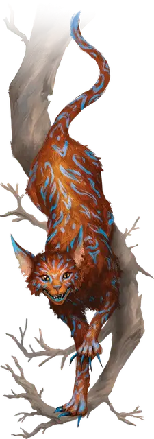

Улыбающийся кот
Grinning Cat
Большая Фея, обычно хаотично-нейтральная

Класс Доспеха 12
Хиты 45 (7к10 + 7)
Скорость 40 футов, лазая 40 футов
| мод | спас | ||
|---|---|---|---|
| СИЛ | 14 | +2 | +2 |
| ЛОВ | 15 | +2 | +2 |
| ТЕЛ | 13 | +1 | +1 |
| мод | спас | ||
|---|---|---|---|
| ИНТ | 15 | +2 | +2 |
| МДР | 14 | +2 | +2 |
| ХАР | 16 | +3 | +3 |
Навыки Восприятие +4, Скрытность +6
Чувства тёмное зрение 60 футов, пассивное Восприятие 14
Языки Общий, Сильван
Опасность 1 (200 опыта)
Бонус мастерства +2
Особенности
Сопротивление магии. Кот совершает с преимуществом спасброски от заклинаний и прочих магических эффектов.
Действия
Укус. . Рукопашная атака оружием: +4 к попаданию, досягаемость 5 футов, одна цель. Попадание: 7 (1к10 + 2) колющего урона.
Когти. . Рукопашная атака оружием: +4 к попаданию, досягаемость 5 футов, одна цель. Попадание: 9 (2к6 + 2) рубящего урона. Если улыбающийся кот был невидим до того, как атаковал, цель должна преуспеть в спасброске Силы Сл 12, иначе будет сбита с ног. Если цель лежит ничком, кошка может совершить по ней атаку Укусом бонусным действием.
Растворение. Улыбающийся кот волшебным образом становится невидимым на 1 час или до тех пор, пока не атакует, постепенно исчезая в течение своего хода. Он может оставить видимой часть своего тела, такую как хвост, голова или ухмыляющийся рот. Любое снаряжение, которое носит кот, становится невидимым вместе с ним.
Бонусные действия
Возвращение. Улыбающийся кот становится видимым или делает видимой часть своего тела. Любое снаряжение, которое кот носит на видимой части своего тела, также становится видимым.
Ухмыляющийся шаг. Улыбающийся кот телепортируется вместе с любым надетым и несомым снаряжением, на расстояние до 60 футов в незанятое пространство, которое он может видеть.
Описание
Мое единственное общение с улыбающимся котом вызвало у меня желание стереть ухмылку с лица этой твари огромным сжатым кулаком, если вы понимаете, что я имею в виду.
-Бигби
Поверь мне, тот кот был так же раздражен, как и ты, друг мой.
- Дианкастра
Улыбающийся кошки - озорные феи, которым доставляет удовольствие приставать к путешественникам и вводить их в заблуждение. Они напоминают крупных домашних кошек с длинными, похожими на иглы когтями, но их отличают широкие зубастые улыбки, которые и дали им их название.
Улыбающийся кошки часто обитают в кланах великанов или рядом с ними. Они проводят большую часть своего времени невидимыми, отдыхая на ветвях деревьев, пока добыча — или потенциальный собеседник — не пройдет мимо. Обмениваясь загадками или остротами, кот часто решает показать свою ухмылку, хвост, а иногда и всю голову целиком, чтобы сбить с толку или запугать существо, с которым он разговаривает.
Улыбающегося кота можно попросить подарить один из его усов в качестве подарка. Существо, держащее ус, может единожды использовать его для накладывания заклинания туманный шаг [misty step], после чего ус превращается в дым и уничтожается. Если убить улыбающегося кота, то для этой цели с него можно собрать 2к12 усов.